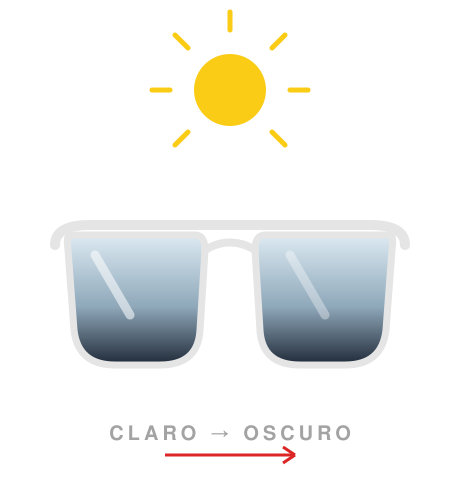
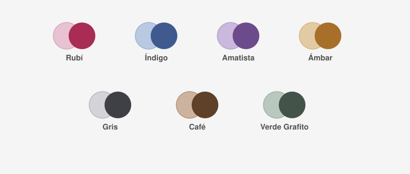
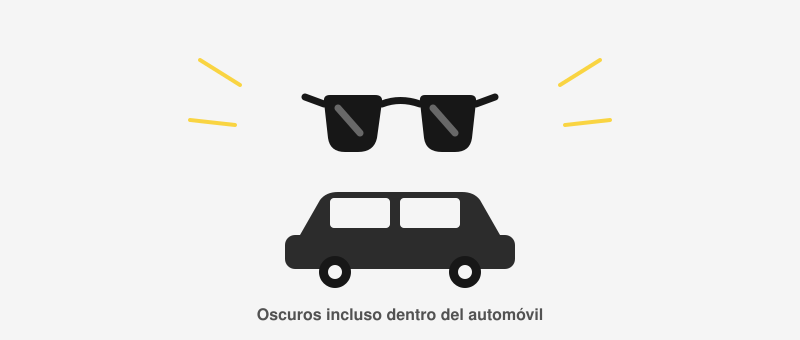

Se aclaran en interiores y se oscurecen con el sol, automáticamente. Un solo par de lentes para todos tus ambientes.

Responden ultra-rápido a la luz UV: se oscurecen al salir y se aclaran al entrar.
Protección solar completa, como un lente de sol graduado.
También protegen de la luz dañina de pantallas, en interiores y exteriores.
Se ven como un lente normal adentro; nadie nota que son fotocromáticos.

Para el uso diario: ultra-rápidos y disponibles en 7 colores vibrantes que se activan con el sol. Personaliza tu look sin cambiar de lentes.

Para quienes son muy sensibles a la luz: la mayor oscuridad, incluso dentro del automóvil. Color icónico gris, con opciones espejadas.
Pregunta por los colores disponibles en tienda. También existen acabados Style Mirrors (espejados) para un look distinto.